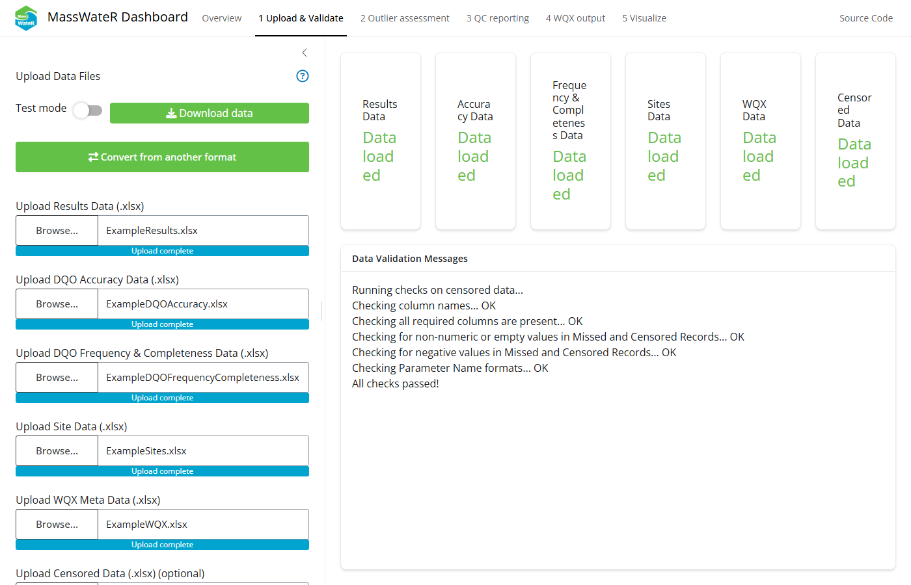
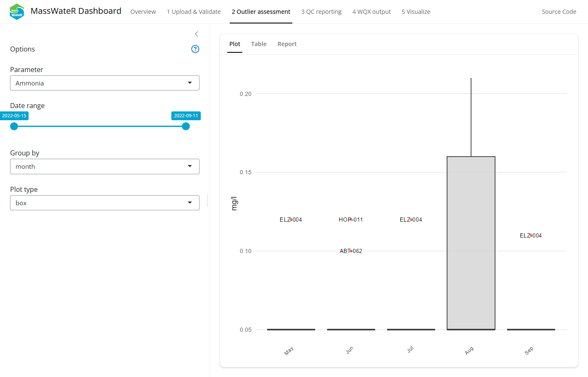
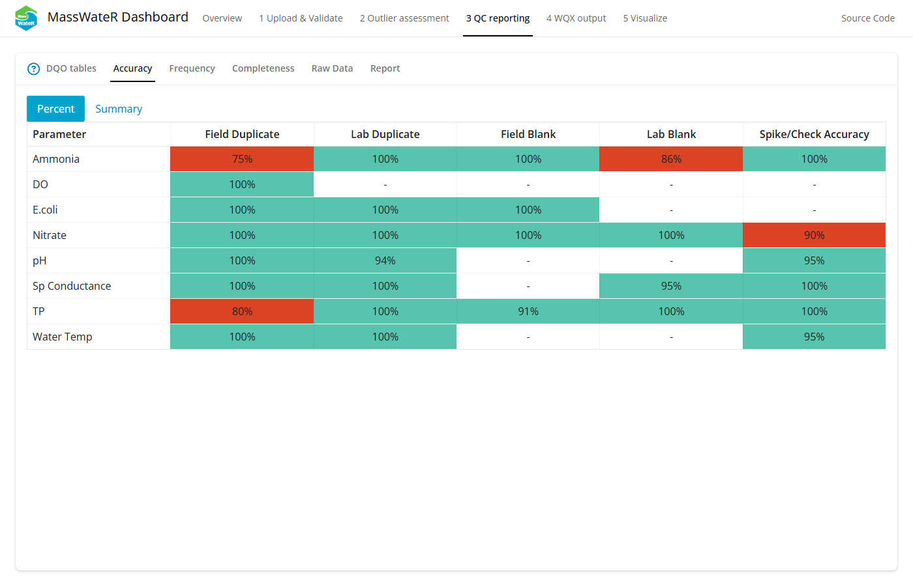
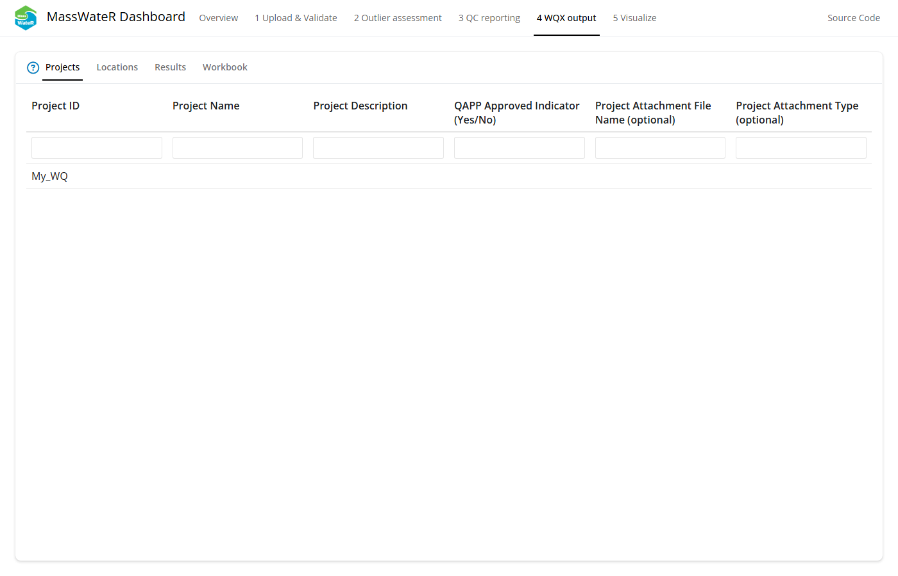
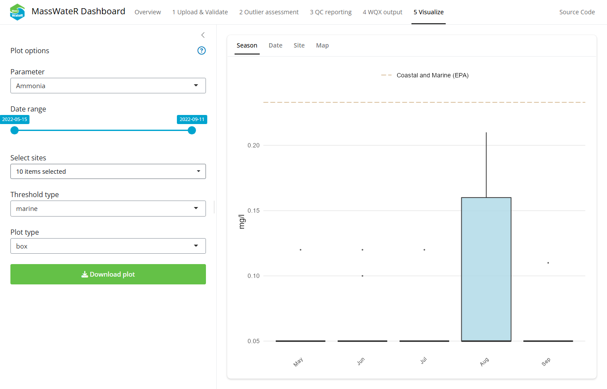

Overview
A Shiny dashboard is available to use the MassWateR workflow entirely within a web browser. The dashboard walks through the same steps described elsewhere in the vignette articles without requiring any R code. This includes uploading and validating your data files, reviewing potential outliers, assessing data quality objectives and creating quality control reports, preparing output for the Water Quality Exchange (WQX), and visualizing your results.
Accessing the dashboard
The dashboard can be accessed two ways.
Install as an R package
The dashboard is available as a companion R package, MassWateRdash. Issues directly related to the dashboard and its use can be reported on that repository’s issues page (issues related to core features of the MassWateR package can be reported on the MassWateR issues page).
Install the MassWateRdash repository directly from GitHub and launch it from an R session:
remotes::install_github("massbays-tech/MassWateRdash")
library(MassWateRdash)
run_app()This opens the dashboard in your default web browser. Data are uploaded from your computer and all processing happens locally in your R session.
Using the dashboard
The dashboard includes five pages, accessible from the navigation bar at the top of the app. Each page includes a help button (a question mark icon) that opens a popup describing what the page shows and how to use it. The Outlier Assessment, QC Reporting, WQX Output, and Visualize pages become available in the navigation bar once data have been uploaded and validated on the Upload & Validate page.
1. Upload & Validate

The Upload & Validate tab.
This page is used to upload and format data used for the rest of the dashboard. Five types of data (six files) are used with the MassWateR package, described in the Data input and checks article.
- Water quality results organized by sample location and date.
- Summary of data quality objectives that describe quality control accuracy, frequency, and completeness measures for data in the results file. These are separate files, one for accuracy and frequency and another for completeness.
- A site metadata file, including location names, latitude, longitude, and additional grouping factors for sites.
- A WQX metadata file required for generating output to facilitate data upload to WQX.
- Optional information on the number of censored or missing observations by parameter, used only in the quality control report.
The dashboard can be run in test mode by flipping the switch in the top left. This loads pre-existing files to use with the package.
Choosing the option to convert from another format opens up a box to convert existing data into the format required by MassWateR. This option makes use of the wqformat package.
Uploading data files will run the standard suite of checks used by MassWateR that ensure the data are the correct format. Templates are available on the package’s Resources page. An interactive popup will appear if the data require correction. Follow the on-screen prompts to correct the data, then click “Try upload again” to load the corrected data from within the app.
Input data can be downloaded in a zipped folder once uploaded by clicking the Download data button. The button is only visible after data are uploaded.
2. Outlier Assessment

The Outlier Assessment tab.
This page is used to view potential outliers in the results data file, described in more detail in the Outlier checks article.
The controls on the left sidebar can be used to select the parameter, date range, grouping factor, and plot type. The latter two are for the plots shown in the plot sub-tab.
The right side shows the outliers for the selected options. Cycle through the sub-tabs to view the results as a plot or displayed separately in a table. The third report sub-tab can be used to download a complete outlier report. The report can be downloaded as a Word file with all plots included or as a zipped file with images for all plots.
3. QC Reporting

The QC Reporting tab.
This page is used to view the quality control information for the results data file, using information from the data quality objectives that describe quality control accuracy, frequency, and completeness. See the Quality control article for detailed information on the quality control methods and results.
The page includes six sub-tabs:
- DQO tables: View tables for the frequency & completeness and accuracy data quality objectives. These are the same files imported on the first page.
- Accuracy: The quality control checks for accuracy assess several characteristics of the data in the results file by referencing appropriate values in the data quality objectives file for accuracy. In short, the accuracy checks evaluate field blanks, lab blanks, field duplicates, lab duplicates, lab spikes, and instrument checks. View a table showing the percent of observations by parameter that fulfill data quality objectives for accuracy. A summary table showing all results by parameter and quality control check can also be viewed.
- Frequency: The quality control checks for frequency are used to verify an appropriate number of quality control samples have been collected or analyzed for each parameter. These are checks on the quantity of samples and not the values, as for the accuracy checks. View a table showing the percent of observations by parameter that fulfill data quality objectives for frequency. A summary table showing all results by parameter and quality control check can also be viewed.
- Completeness: The quality control checks for completeness are used to assess the number of regular samples relative to qualified samples that apply to each parameter. A single table shows the outcome of these checks.
- Raw Data: Individual quality control checks for every parameter and observation can be viewed on this sub-tab. Results can be viewed for field duplicates, lab duplicates, field blanks, lab blanks, and lab spikes / instrument checks.
- Report: Download a complete quality control report as a Word document. This report includes all tables in this page.
4. WQX Output

The WQX Output tab.
This page is used to view your data formatted for upload to the Water Quality Exchange (WQX) portal. See the Water Quality Exchange output article for detailed information on the results and how to upload to WQX.
The page includes four sub-tabs:
- Projects: View a table showing project information from your results file formatted for WQX upload.
- Locations: View a table showing site locations from your results and site files formatted for WQX upload.
- Results: View a complete water quality file formatted for WQX upload.
- Workbook: Download a complete WQX Excel workbook. This file includes all tables in this page.
The output is populated with as much content as possible based on information in the input files. The remainder of the information not included in the output will need to be manually entered before uploading the data to WQX. All required columns are present, but individual rows will need to be verified for completeness. It is the responsibility of the user to verify this information is complete and correct before uploading the data.
5. Visualize

The Visualize tab.
This page is used to visualize results from your input data files. See the Analyses article for detailed information on the plots and methods used to create them.
The controls on the left sidebar can be used to select the parameter, date range, sites, threshold type (as a line on the plot), and plot type (e.g., boxplot, barplot, etc.). These options will change based on the selected sub-tab on the right. A download button can be used to download an image of the visible plot.
Four types of plots can be viewed with the right sub-tabs:
- Season: View monthly results for a single parameter using boxplots or barplots.
- Date: View results continuously over time for a single parameter as line plots, with the lines separated by site.
- Site: View results for a single parameter using boxplots or barplots separately for each site on the x-axis.
- Map: View a map of summarized results for a selected parameter at each monitoring site. Results are summarized as the mean or geometric mean based on information in the data quality objective file for accuracy. Additional options for the map can be used to change the complexity of the water features and type of basemap.